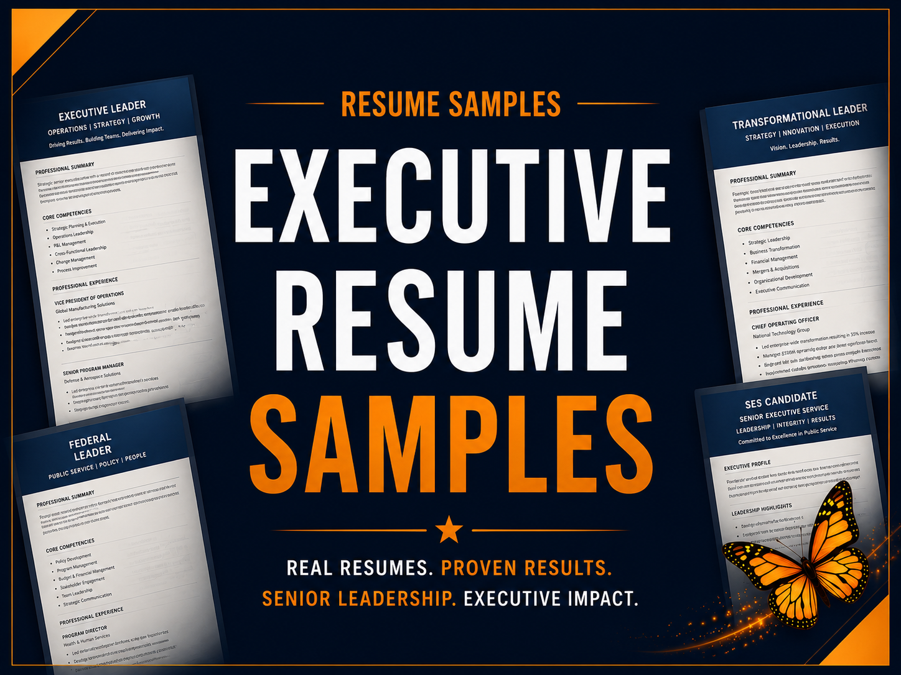

Free executive résumé samples
Executive résumés developed for senior leaders pursuing leadership opportunities in the private sector, nonprofit organizations and government — demonstrating executive branding, career summaries, leadership accomplishments, quantifiable results and modern design.
Schedule a complimentary consultation